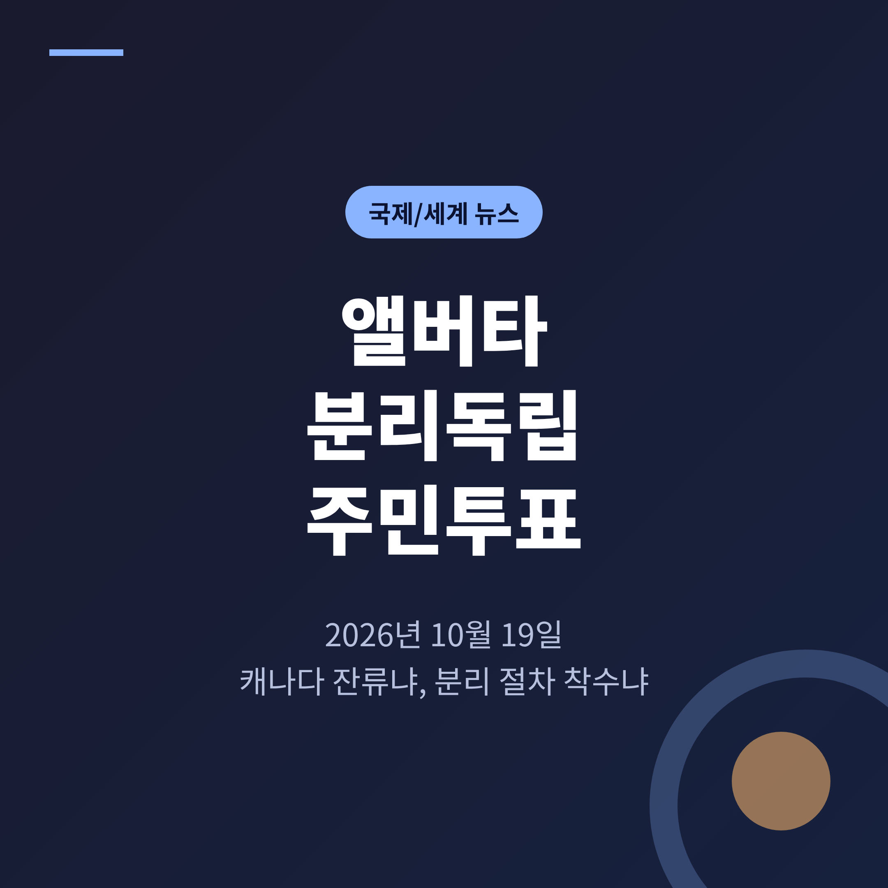
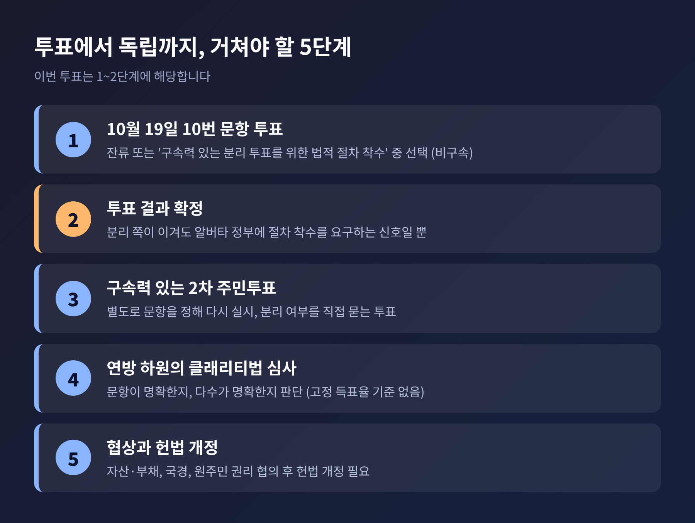
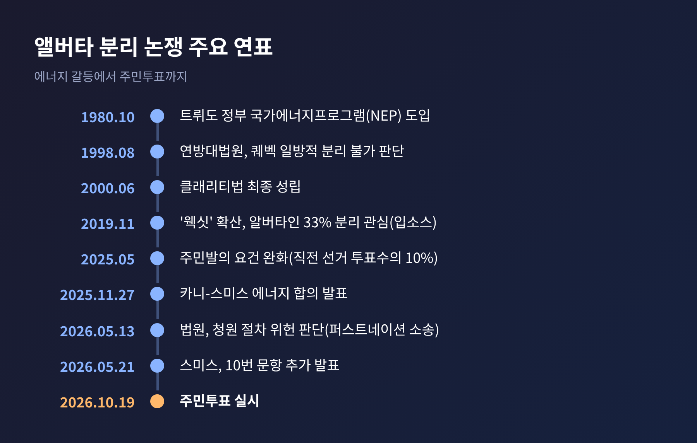
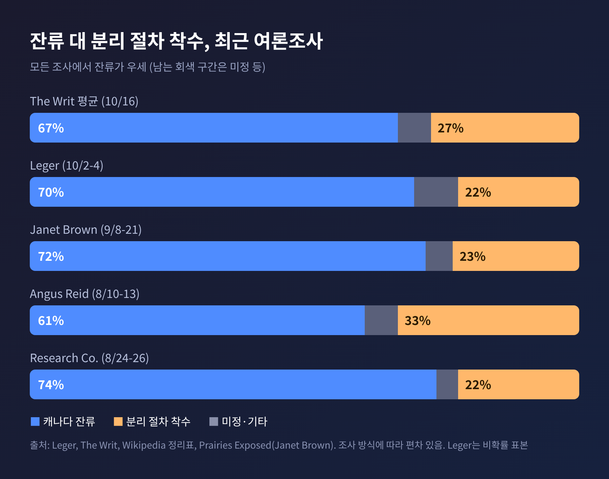
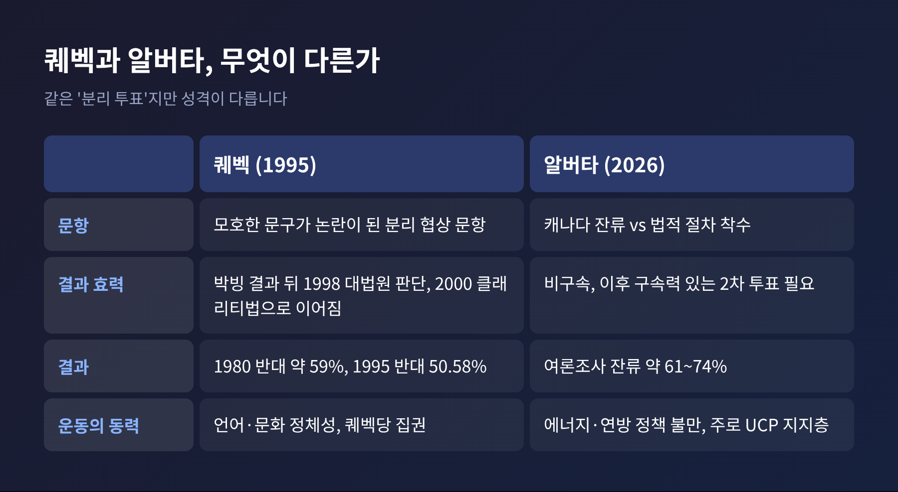
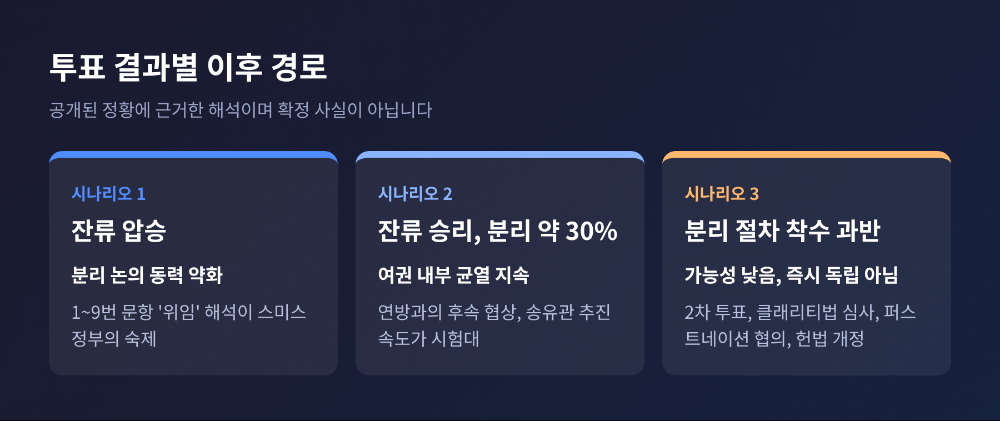

3줄 요약
오늘은 앨버타 분리독립 주민투표가 정확히 무엇을 묻는지, 왜 지금 열리는지 정리해 보려 합니다. 법적 쟁점과 퀘벡 사례, 투표 이후의 전망도 함께 살펴보겠습니다. 분리를 주장하는 쪽과 잔류를 주장하는 쪽의 논리를 같은 무게로 옮겨 적었습니다.
투표일은 2026년 10월 19일 월요일입니다. 사전투표는 10월 13일부터 17일까지 진행되었고, 당일 투표는 오전 9시부터 오후 8시까지입니다. 개표는 수작업으로 이루어지며 10번 문항을 가장 먼저 센다고 합니다.
이번 투표는 모두 10개 문항으로 구성됩니다. 1번부터 9번은 이민 정책, 투표 시 시민권 증명, 상원 폐지, 연방 프로그램 옵트아웃 같은 사안을 묻습니다. 핵심인 10번 문항은 캐나다에 잔류할 것인지, 아니면 알버타 정부가 헌법이 요구하는 법적 절차에 착수해 구속력 있는 분리 주민투표를 실시하게 할 것인지를 고르게 합니다.
여기서 한 가지를 분명히 해 둘 필요가 있습니다. '분리'에 표를 던져도 알버타가 독립하지는 않습니다. 협상이 자동으로 시작되지도 않고, 국경이 바뀌지도 않습니다. 이후 별도의 구속력 있는 투표가 있어야 하고, 그 뒤에 연방 차원의 심사와 헌법 개정이 따라야 합니다.

사전투표와 특별투표를 합쳐 약 102만 표가 이미 던져졌다고 CTV와 BNN 블룸버그 라이브블로그가 전했습니다. 유권자 약 300만 명의 3분의 1 수준입니다. 알버타가 분리 문제를 주민투표에 부치는 것은 이번이 처음입니다. 지금까지 캐나다에서 분리를 묻는 주민투표를 연 곳은 퀘벡(1980년, 1995년)뿐이었습니다.
알버타는 인구가 약 500만 명이지만, 2023년 기준 캐나다 원유의 84%와 천연가스의 61%를 생산하는 에너지 중심지입니다. 일일 원유 생산량은 400만 배럴을 넘고, 세계 4위 수준의 확인 매장량을 가졌습니다. 이 주가 연방을 떠나는 문제를 공식 투표에 올렸다는 사실만으로도 캐나다 정치에는 상당한 무게가 실립니다.
시점도 예민합니다. 도널드 트럼프 미국 대통령은 무역 전쟁을 벌이며 캐나다를 '51번째 주'로 만들겠다고 여러 차례 말해 왔습니다. 카니 총리는 이번 투표가 "최악의 시점에 열린다"고 말했고, 외부에서 캐나다를 약화시키려 한다고 경고했습니다. 다만 트럼프 대통령을 직접 지목하지는 않았다고 AP는 전했습니다.
석유 수출도 걸려 있습니다. 캐나다산 원유 수출의 약 89%가 미국으로 향하고, 상당수는 다른 주를 지나는 송유관을 탑니다. 투표 결과가 당장 석유 흐름을 막지는 않겠지만, 장기적으로 통과 권한과 무역 규칙, 투자 판단에 불확실성을 더한다는 것이 일반적인 분석입니다.
알버타의 불만은 새롭지 않습니다. 1980년 10월 트뤼도 정부의 국가에너지프로그램(NEP)이 가격 통제와 연방 과세를 확대하면서 많은 알버타인이 연방의 개입이라고 받아들였습니다. 이듬해 피터 로히드 주총리는 하루 6만 배럴 감산을 발표하며 맞섰습니다. 1982년에는 분리를 내건 서부캐나다 컨셉이 11만 표 넘게 얻었지만 의석은 얻지 못했습니다.
예전엔 한 번의 정책 충돌이 불씨였습니다. 지금은 누적된 정서가 더 큰 몫을 합니다. 2018년 입소스 조사에서 알버타인의 62%가 연방에서 공정한 몫을 받지 못한다고 답했는데, 1997년에는 45%였습니다. 2019년 총선 뒤에는 '웩싯(Wexit)'이 번졌고, 그해 11월 조사에서 알버타인의 33%가 분리에 관심을 보였습니다.
2025년에 흐름이 다시 바뀝니다. 4월 총선에서 자유당이 4연속 집권했고, 5월 스미스 주총리는 시민 청원이 요건을 채우면 2026년 주민투표에 부치겠다고 밝혔습니다. 같은 달 법을 고쳐 청원 요건을 직전 선거 투표수의 10%로 낮추고 서명 기간을 120일로 늘렸습니다. 스미스는 당시에도 본인은 분리에 반대한다고 했습니다.

2025년 10월에는 스미스가 카니 총리에게 11월 16일까지 반대하는 연방법 9개를 고치라고 요구했습니다. 이어 11월 27일 두 정부는 에너지 합의를 발표했습니다. 서해안으로 가는 100만 배럴 이상의 송유관을 연방이 지원하고, 석유·가스 배출 상한은 시행하지 않으며, 알버타의 산업 탄소 가격은 톤당 130캐나다달러로 올리는 내용이 골자입니다. 송유관은 대형 탄소 포집 사업 '패스웨이즈'의 가동을 조건으로 합니다. 평가는 갈립니다. 두 정치인은 성과로 내세우지만, 분리 진영의 타냐 클레멘스는 "새끼손가락 약속"이라 했고, 칼가리대 배리 쿠퍼 교수는 "거의 무의미"하다고 평가했습니다.
경제 지표도 불만의 한 축입니다. 알버타의 1인당 GDP는 전국 최고이지만, 실질 가처분소득은 2014년보다 11% 낮고 고용률은 2012년 약 70%에서 64%로 내려왔다고 세르반트 신용협동조합 수석 이코노미스트가 짚었습니다. 잘사는 주라는 통계와 체감 사이의 간극이 있는 셈입니다.
캐나다 헌법에는 주가 일방적으로 분리할 수 있다는 조항이 없습니다. 분리하려면 헌법 개정이 필요합니다. 1998년 8월 연방대법원은 퀘벡 분리 사건에서 일방적 분리는 국내법과 국제법 모두에서 불가능하다고 판단했습니다. 다만 명확한 문항에 명확한 다수가 분리 의사를 밝히면 연방과 다른 당사자들이 협상할 의무가 생긴다고 보았습니다. '명확한 다수'가 어느 정도인지는 법원이 정하지 않고 정치권에 맡겼습니다.
이를 입법으로 옮긴 것이 2000년 6월 29일 최종 성립한 클래리티법입니다. 하원은 투표 전에 문항이 분리만을 직접 묻는지 판단하고, 투표 후에는 득표율의 크기와 투표율, 원주민 대표의 의견 등을 따져 다수가 명확한지 판단합니다. 고정된 득표율 기준은 없습니다. 협상 테이블에는 자산과 부채 분할, 국경, 원주민 권리, 소수자 보호가 올라갑니다.
이번 10번 문항은 '협상 위임'이나 '독립 찬반'이 아니라 '절차 착수'를 묻기 때문에, 클래리티법의 본격 심사는 이후에 나올 구속력 있는 문항에 적용될 가능성이 큽니다. 오타와가 그 문항의 명확성을 인정하지 않을 수 있어, 2차 투표가 열린다고 해서 곧 협상으로 이어진다는 보장도 없습니다.
원주민 조약도 변수입니다. 알버타는 1876년, 1877년, 1899년에 체결된 조약 6·7·8호에 속한 48개 퍼스트네이션과 얽혀 있습니다. 2026년 5월 13일 알버타 법원은 퍼스트네이션이 제기한 소송에서 청원 절차가 조약상 권리를 침해한다고 판단했습니다. 스미스 주총리는 판결을 비판하며 단서조항 사용 가능성을 언급했지만, 해당 조항이 법원이 문제 삼은 헌법 조항에는 적용되지 않는다는 지적이 나옵니다. 이후 서명 재검증에서 분리 청원은 222,597건, 잔류 청원은 404,293건이 확인되었고, 5월 21일 스미스가 10번 문항 추가를 발표했습니다.
분리 진영은 알버타 프로스페리티 프로젝트, 렛 알버타 디사이드, 스테이 프리 알버타 등으로 나뉩니다. 렛 알버타 디사이드는 알버타가 연방에 내는 돈이 받는 서비스보다 해마다 200억 캐나다달러 많다고 주장합니다. 알버타 프로스페리티 프로젝트의 미치 실베스트르는 페르시아만 산유국처럼 저세율과 시민 배당 모델을 이야기합니다. 키스 윌슨은 세계가 불안정해서 투표를 미뤄야 한다는 논리를 받아들이지 않습니다. 이 200억 달러 수치는 단체의 주장이며 독립적으로 검증된 숫자는 아닙니다.
잔류 진영의 가장 큰 논거는 경제적 비용입니다. 주 정부가 의뢰한 칼가리대 연구는 원만하게 이행되더라도 1인당 임금이 1,200캐나다달러 줄고 단기 GDP가 2.2% 떨어진다고 추정했습니다. 협상이 교착되고 새 통화가 실패하는 최악의 경우 GDP가 10% 작아질 수 있다고 보았습니다. 경제학자 트레버 톰비도 균등화 같은 제도는 거의 모든 연방국가에 있고, 알버타는 어떤 구조에서도 수혜 주가 되지 못한다고 말했습니다.
정부 입장은 흥미롭습니다. 스미스 주총리는 투표를 소집했지만 "이 문제에서 중립이 아니다"라고 말했고, 10월 14일 직접 잔류에 투표했습니다. 10월 16일 레드디어에서는 카니 총리와 함께 국가를 불렀습니다. 스미스는 연방과 손본 '잘못된 법 9개 중 7개'와 송유관 협약을 성과로 꼽으면서도, 분리 지지가 "내가 바라는 것보다 높다"고 인정했습니다.
카니 총리는 10월 15일 캘거리, 16일 에드먼턴 집회에서 잔류를 호소했습니다. 메시지를 보내려는 '분리' 투표는 수년간의 깊은 불확실성을 부르는 "위험한 허세"라고 했고, 과거 오타와가 알버타인에게 자원이 자기 것이 아니라는 느낌을 줬다는 점은 인정했습니다. 보수당 피에르 폴리에브르 대표도 잔류를 지지합니다. 다만 제이슨 케니 전 주총리는 잔류 집회가 1995년 퀘벡처럼 역효과를 낼 수 있다고 우려했습니다.

조사 결과는 한 방향입니다. 여론조사기관 Leger가 10월 2~4일 알버타인 1,001명을 온라인으로 조사한 결과 잔류 70%, 절차 착수 22%, 미정 7%였습니다. 8월의 잔류 65%에서 올랐습니다. 9월 Janet Brown Opinion Research 조사에서는 잔류 72%, 절차 착수 23%였습니다. 에릭 그르니에(Éric Grenier)의 The Writ 여론조사 평균은 10월 16일 기준 잔류 67%, 분리 절차 27%입니다.
그래도 단정은 이릅니다. 조사기관별 편차가 큽니다. 5월과 8월 Angus Reid는 잔류 60~61%, 분리 33~35%를 보였고, Research Co.는 8월에 잔류 74%를 내놓았습니다. 레제르 조사는 비확률 온라인 표본이라 오차범위를 표기할 수 없습니다. 분리 지지는 통합보수당 지지층에 몰려 있어, Angus Reid 조사에서는 통합보수당 지지자의 65%가 분리를, 신민주당 지지자의 97%가 반대를 택했습니다.
주민투표 자체에 대한 시각도 갈립니다. 알버타노동연맹 의뢰로 Abacus Data가 10월 7~13일 조사한 결과, 56%는 투표를 열지 말았어야 한다고, 30%는 열어야 한다고 답했습니다.
1980년 퀘벡 주민투표에서는 반대가 약 59%였습니다. 1995년 10월 30일에는 반대 50.58%, 찬성 49.42%로 간발의 차였습니다. 표 차이가 워낙 작아 문항 문구와 '명확한 다수' 논쟁이 일었고, 그 결과물이 클래리티법입니다.
알버타는 구조가 다릅니다. 첫째, 퀘벡 분리주의는 언어와 문화의 차이에서 출발했고 1976년 퀘벡당(PQ) 집권으로 제도화되었습니다. 알버타 운동은 자원과 연방 정책에 대한 경제적 불만이 중심이며, 주로 우파와 통합보수당 지지층에서 나옵니다. 둘째, 퀘벡은 분리 협상 권한을 직접 물었지만 알버타는 한 단계 앞선 '절차 착수'를 묻습니다. 셋째, 여론이 다릅니다. 1995년 퀘벡이 거의 반반이었다면 지금 알버타는 잔류가 20~50%포인트 앞섭니다.

결과는 월요일 마감 후 48시간 안에 비공식 집계가 나올 예정이고, 정부는 10월 20일 후속 계획을 밝힐 것으로 알려졌습니다. 다음은 확정된 사실이 아니라 공개된 정황을 바탕으로 한 저의 해석입니다.
첫째, 잔류가 큰 격차로 이기는 경우입니다. 분리 논의는 정치적 동력을 잃겠지만, 스미스 정부는 1~9번 문항의 '위임'을 어떻게 해석할지 숙제를 안게 됩니다. 스미스는 1~9번에는 사전 기준을 두지 않았고, 투표율과 결과를 보고 판단하겠다는 입장이라 해석의 여지가 큽니다.
둘째, 잔류가 이기지만 분리가 30% 안팎을 얻는 경우입니다. 소수라 해도 통합보수당 지지층 내부의 균열이 드러나는 숫자입니다. 스미스 주총리의 지도력과 연방과의 후속 협상, 송유관 추진 속도가 다음 시험대가 됩니다.
셋째, 가능성은 낮지만 분리 절차 착수가 과반을 얻는 경우입니다. 스미스는 이 문항에 50%+1의 단순 과반을 언급했습니다. 그래도 곧바로 독립이 되는 것은 아닙니다. 구속력 있는 2차 투표, 클래리티법에 따른 하원의 심사, 퍼스트네이션과의 협의, 헌법 개정이라는 긴 길이 남아 있습니다.
정리하면 이렇습니다. 이번 투표가 정하는 것은 알버타의 독립이 아니라, 알버타 안에서 분리 논쟁을 어디까지 끌고 갈지에 관한 방향입니다.
질문이 던져졌다는 사실은 어떤 개표 결과보다 오래 남을 것입니다. 월요일 밤의 숫자가 에너지와 연방 정책을 둘러싼 오래된 불만을 가라앉힐지, 아니면 다른 방식으로 다시 불러낼지 지켜보시길 권합니다.

출처: Leger(2026-10-08), The Writ(2026-10-16), Rio Times(2026-10-16), AP/PBS NewsHour(2026-10-16), CTV·BNN Bloomberg 라이브블로그(2026-10-16), Briefs Finance(2026-10-16), Calgary Chamber(2026-09-24), Diplomacy and Law(2026-10-01), Osler(2025-12-05), Wikipedia(알버타 분리 관련 항목 및 클래리티법), EBSCO, Centre for Constitutional Studies
이 글은 공개된 보도와 자료를 바탕으로 정리한 해설이며, 투표 결과가 나오기 전 시점의 정보입니다.